If you've been wanting to try paper mache crafts with your little ones but felt intimidated, you're in the right place! This magical, squishy, hands-on art form is so much easier than it looks, and kids absolutely go wild for it. We've rounded up 15+ fun ideas that range from adorable animals to seasonal decorations, all perfect for crafting with your favorite tiny humans.
What You'll Need
Most paper mache projects use the same basic supplies, so here's what to have on hand before you get started.
- Newspaper or tissue paper strips
- Mod Podge or white craft glue (mixed with water for paste)
- Balloons (round ones work great as a base)
- Acrylic paint set for kids
- Foam paint brushes
15+ Paper Mache Craft Ideas
1. Paper Mache Balloon Globe
Turn a simple round balloon into a colorful globe of the world! Kids love painting the blue oceans and green continents, and it's a sneaky way to work in a little geography. Just layer strips of newspaper over an inflated balloon, let it dry, pop the balloon, and paint away. This is one of the best easy paper mache crafts for kids because the balloon does all the shaping for you.
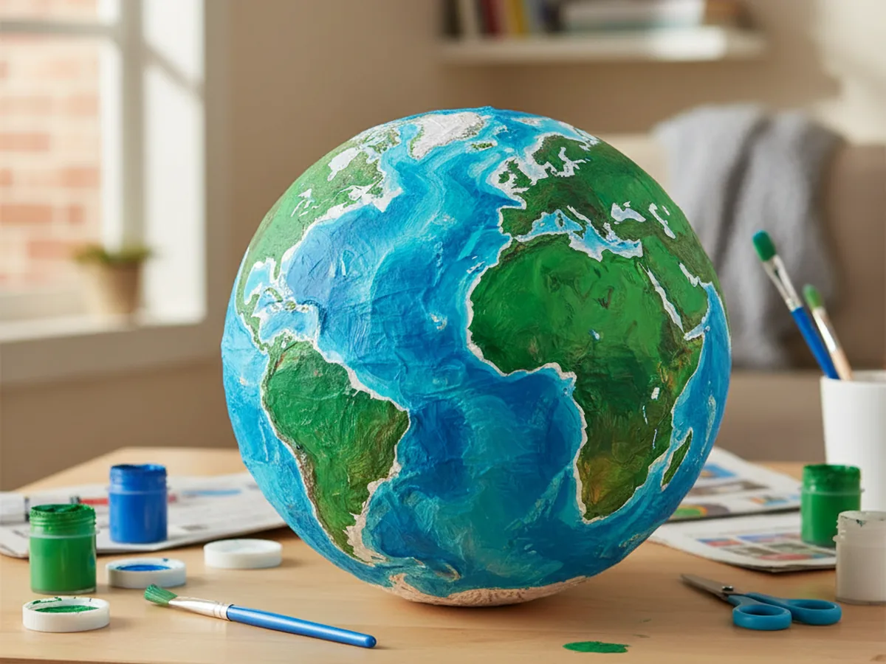
2. Dinosaur Egg
What kid doesn't dream of finding a real dinosaur egg? Use a balloon as the base, cover it with paper mache strips, and once dry, paint it in speckled earthy tones. You can even hide a small toy dinosaur inside before sealing it up for a fun surprise smash activity.
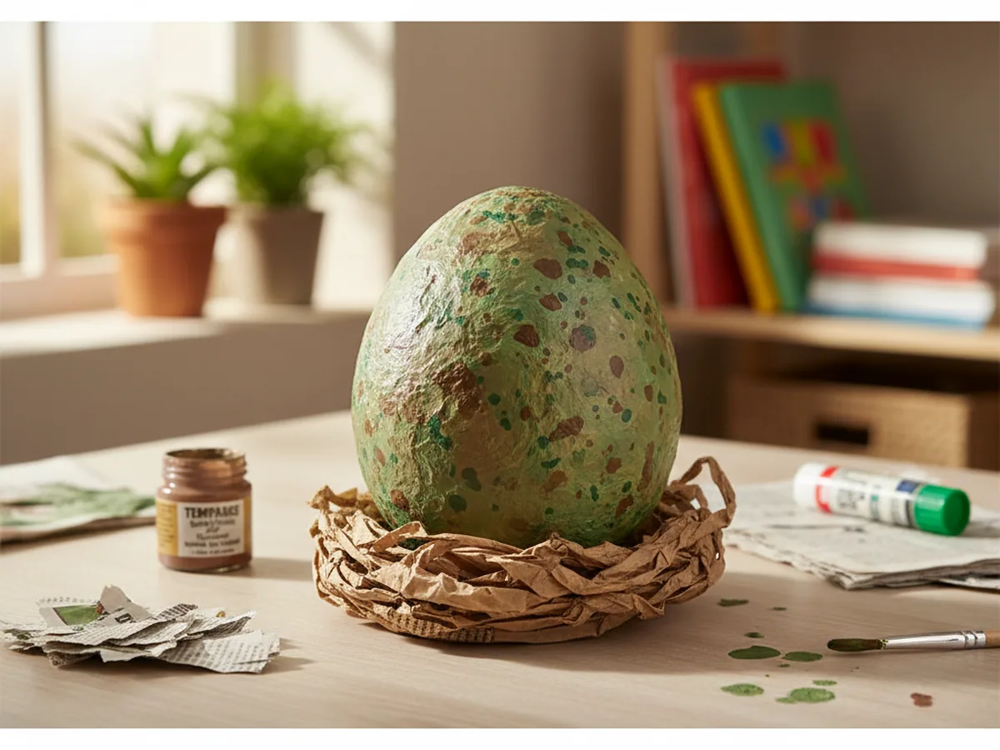
3. Paper Mache Caterpillar
This cheerful caterpillar is perfect for little learners who adore "The Very Hungry Caterpillar." Make several small paper mache balls, line them up, and let your child paint each segment a different bright color. Add googly eyes and pipe cleaner antennae for an irresistible finishing touch. It's one of the sweetest paper mache projects for preschoolers out there.
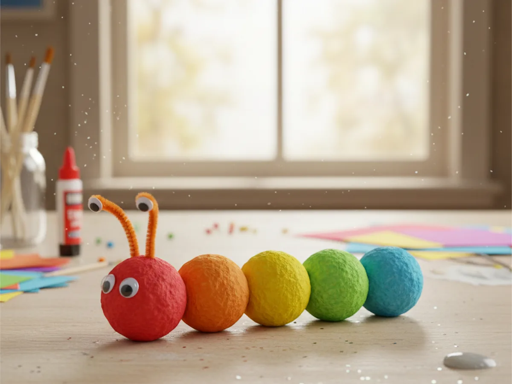
4. Rainbow Bowl
Drape paper mache strips over an upside-down bowl to create a beautiful decorative dish. Once it's dry and you remove the mold, kids can paint it in rainbow stripes or any pattern they love. These make wonderful handmade gifts for grandparents and are surprisingly sturdy once fully cured.
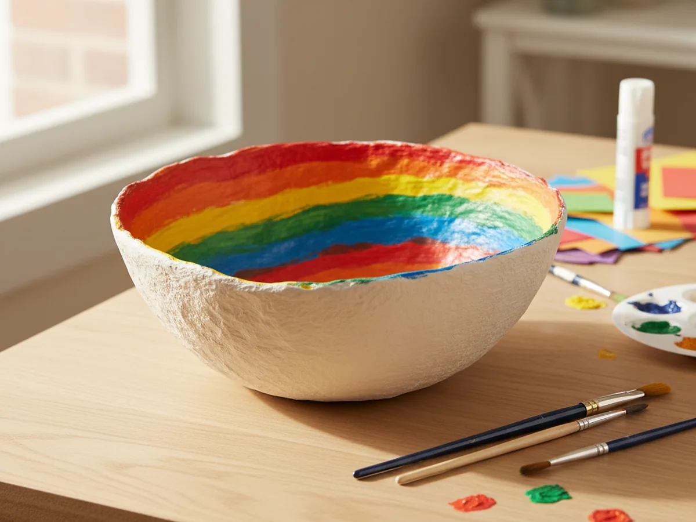
5. Friendly Paper Mache Cat
Use a balloon for the body and a smaller crumpled newspaper ball taped on top for the head. Add triangle ear shapes with cardboard, cover everything in paper mache strips, and you've got yourself the cutest kitty. Kids go crazy painting on whiskers, stripes, and big round eyes. Learning how to make paper mache with kids is so much more fun when there's an adorable animal at the end!
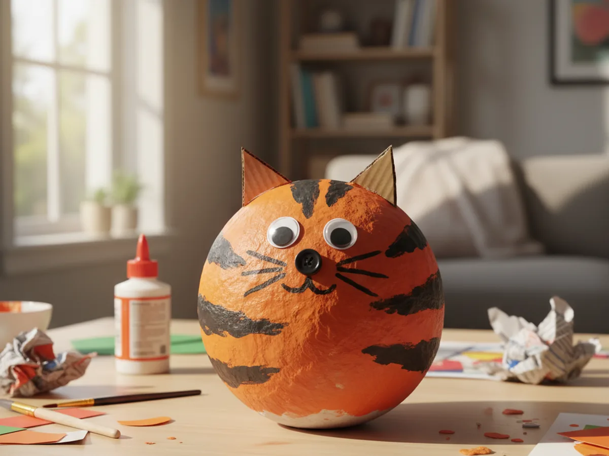
6. Mini Paper Mache Volcano
Build a volcano shape around a small plastic bottle using crumpled newspaper and tape, then cover it all in paper mache layers. Once dry, paint it with fiery reds, oranges, and rocky browns. For eruption day, a simple baking soda and vinegar combo creates the perfect "lava" moment that kids will talk about for weeks.
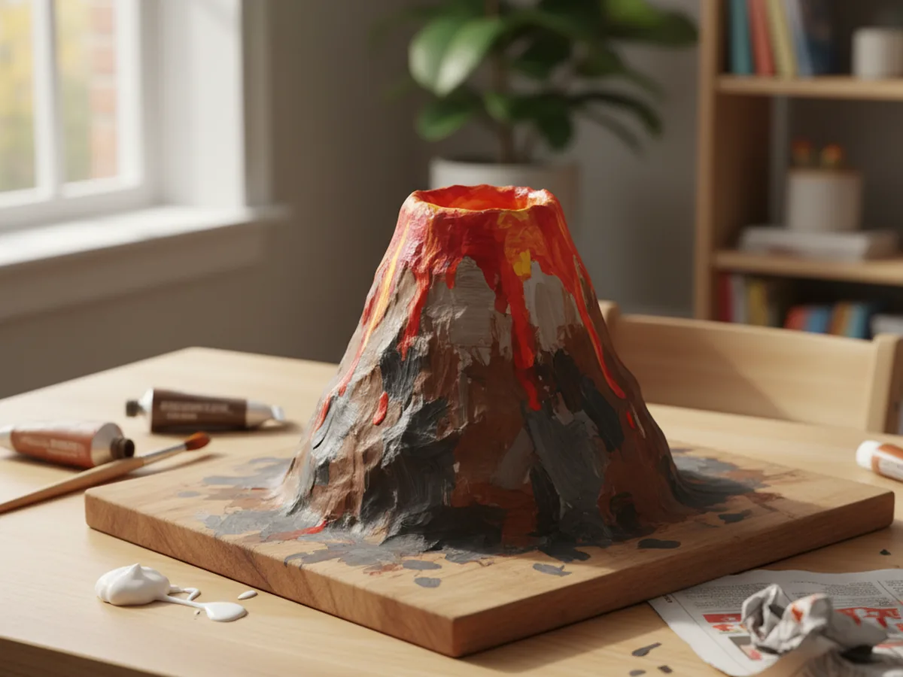
7. Paper Mache Penguin
This roly-poly penguin starts with a balloon base and gets its charm from a simple black and white paint job. Add an orange triangle beak and little felt feet, and your child will have a new best friend. Paper mache animals for kids are always a hit, and this one is especially great for winter-themed craft days.
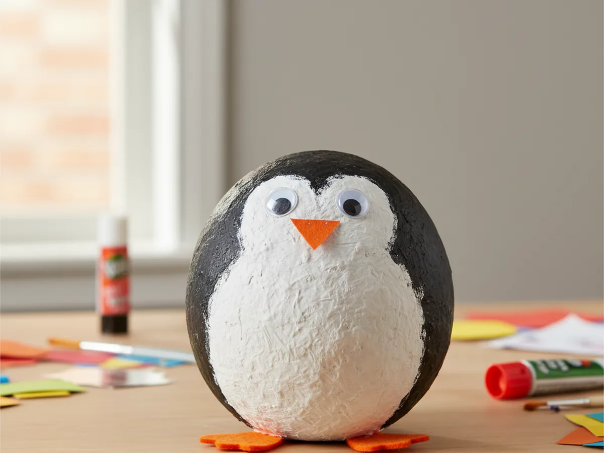
8. Sun and Moon Wall Hanging
Create a flat circular shape using cardboard as the base, then layer on paper mache strips to give it texture and dimension. One side can be a bright, cheerful sun with rays, and the other a serene crescent moon. Poke a hole at the top, thread some yarn through, and hang it in your child's room for instant handmade decor.
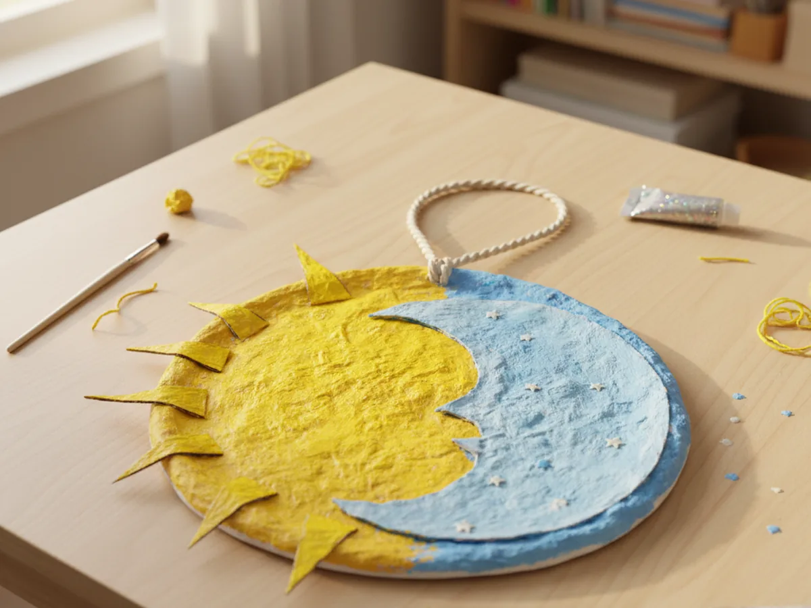
9. Ladybug
Use half of a paper mache balloon shell to create the dome-shaped body of an adorable ladybug. Paint it classic red with black spots, add a little black head made from a crumpled paper ball, and glue on googly eyes. This is one of those simple papier mache ideas for toddlers that's easy enough for the youngest crafters with a little help from Mom.
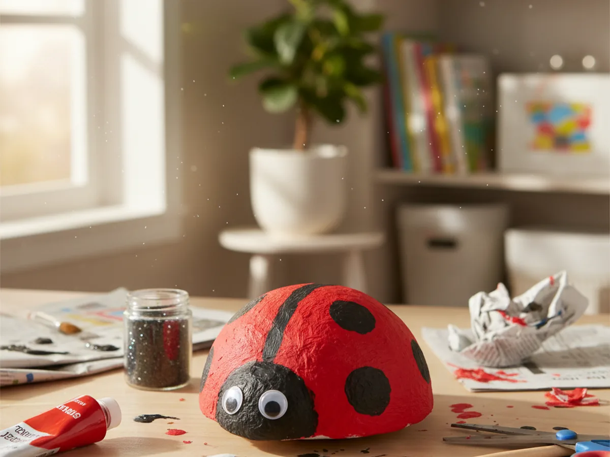
10. Treasure Chest
Form a box shape from cardboard, then cover it in paper mache strips to create a sturdy little treasure chest. Once dry, paint it brown or gold and add "metal" details with foil or metallic paint. Kids will love filling it with their tiny treasures, costume jewelry, or even pirate-themed treats for a birthday party.
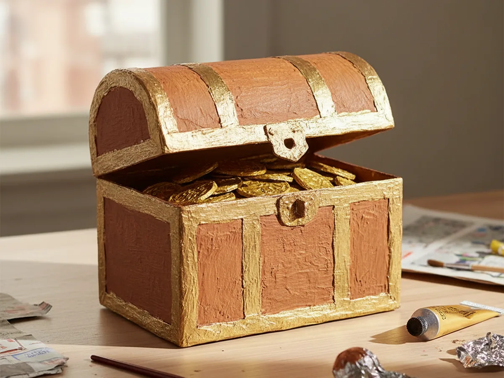
11. Paper Mache Fish
Stuff a plastic bag with newspaper into a fish shape and tape it to hold. Cover it in paper mache strips, add a cardboard tail fin, and let it dry completely. The painting step is where the real magic happens, because kids can go wild with tropical colors, scales, and glitter. Hang a few from the ceiling for an under-the-sea bedroom theme!
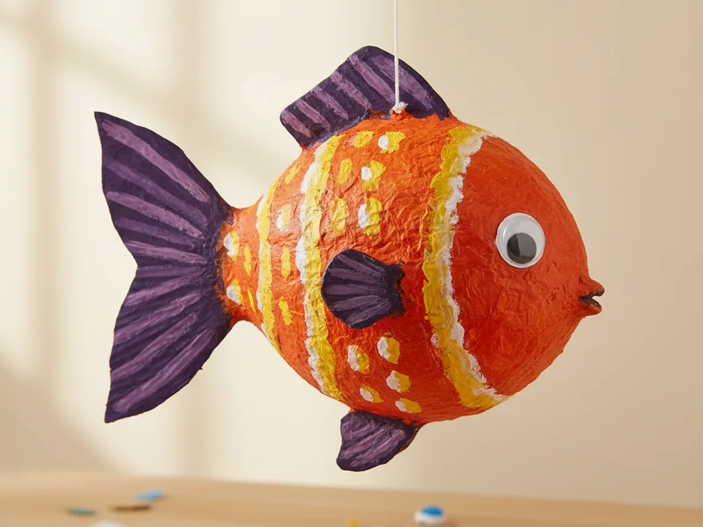
12. Piggy Bank
Transform a balloon into a functional piggy bank by adding four toilet paper roll legs, a paper cup snout, and cardboard ears. Cover the whole thing in paper mache strips, let it dry, then cut a coin slot in the top. Paint it pink (or any color your child loves) and you've got a craft that doubles as a lesson in saving.
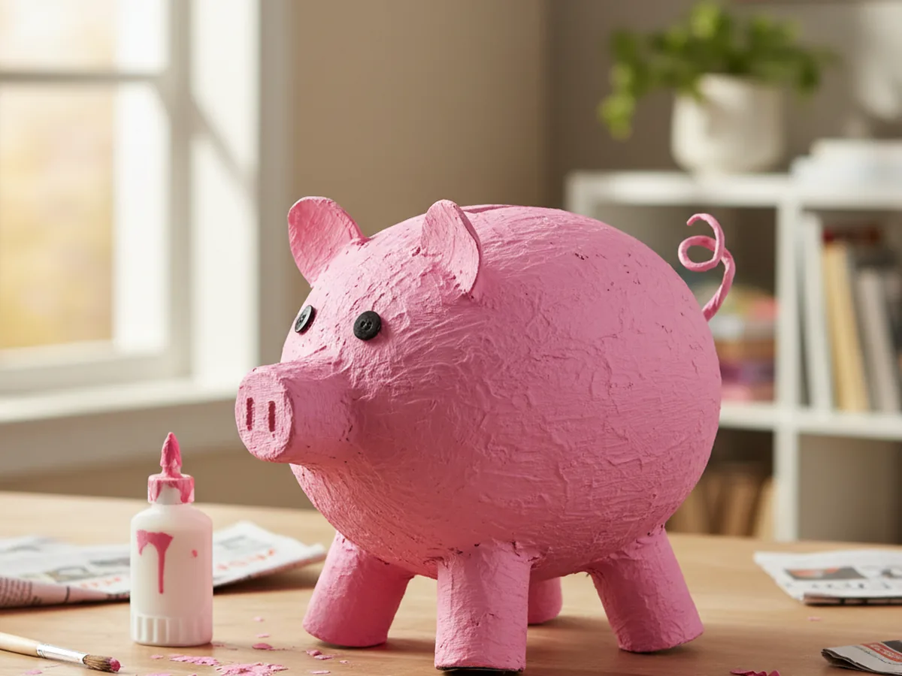
13. Paper Mache Butterfly
Cut a butterfly wing shape from cardboard and use a toilet paper roll for the body. Cover everything in paper mache strips, let it dry, and then watch your child light up during the painting stage. Butterflies invite the most beautiful color combinations, and no two ever look the same. This is a wonderful project for spring or anytime your little one needs a creative boost.
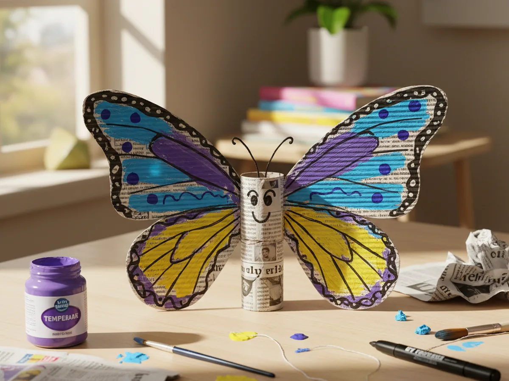
14. Fruit Bowl Display
Crumple newspaper into apple, banana, and orange shapes, then wrap them in tape and cover with paper mache layers. Once dry, paint each piece of fruit in realistic (or fantastically wild) colors. These make a charming play kitchen accessory or a colorful centerpiece for the family table. It's a great way to practice paper mache crafts while also learning about healthy foods.
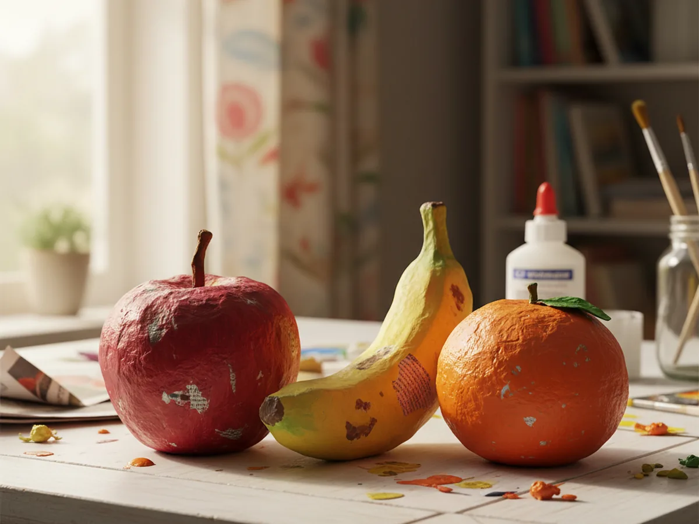
15. Paper Mache Elephant
This gentle giant uses a balloon for the body, a paper towel roll for the trunk, and cardboard circles for those big floppy ears. Layer on paper mache strips, let everything dry overnight, and paint your elephant gray, pink, or in full rainbow party colors. Paper mache animals for kids are always popular, and the elephant is a crowd favorite every single time.
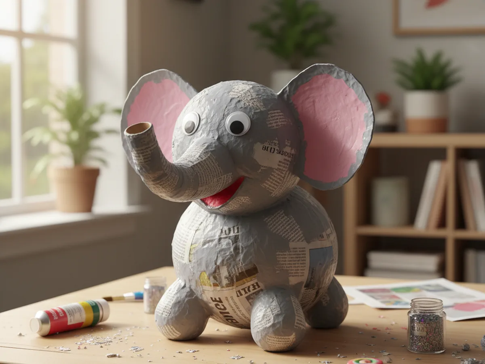
16. Paper Mache Maracas
Fill a small balloon with dried beans or rice before inflating it, then cover it in paper mache strips and attach a paper towel roll handle. Once dry, you've got a musical instrument that actually works! Kids love shaking these and decorating them with bright colors and fun patterns. It's a craft and a toy all in one, which makes it a total win for busy moms.
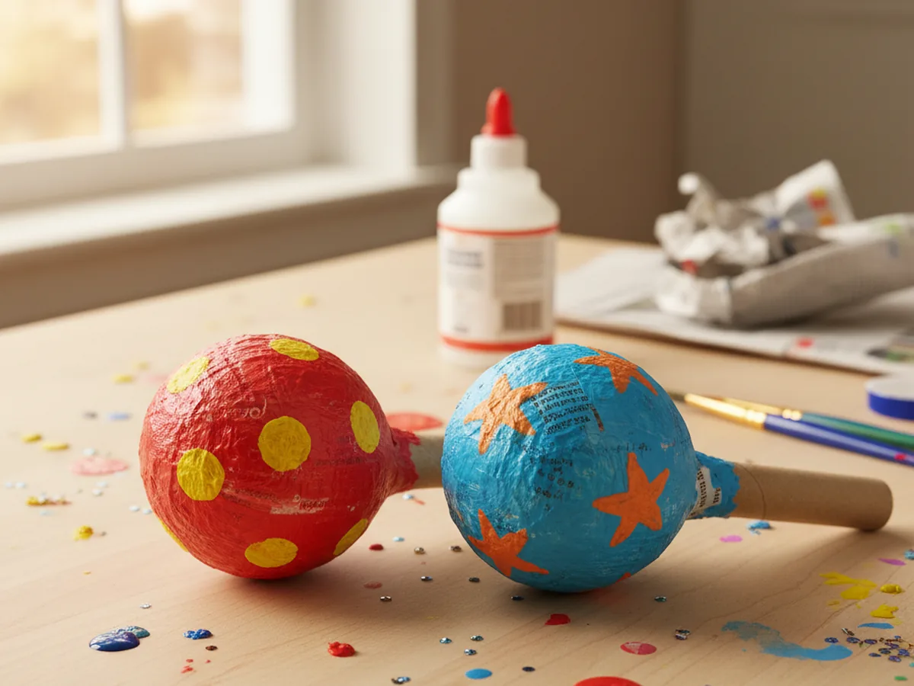
More Crafts You'll Love
If your little ones can't get enough crafting time, check out these other popular roundups from our blog!
- Top 10 Paper Christmas Crafts Kids Will Beg to Make Every Holiday Season
- 13 Adorably Spooky Paper Halloween Crafts Your Kids Will Beg to Make Every Year
Final Thoughts
We hope this list has you feeling inspired and ready to dive into some wonderfully messy, gloriously creative paper mache crafts with your kids. Don't worry about perfection. The lopsided animals and lumpy bowls are the ones your family will treasure the most. Grab some newspaper, mix up that paste, and enjoy every sticky, giggly moment together!